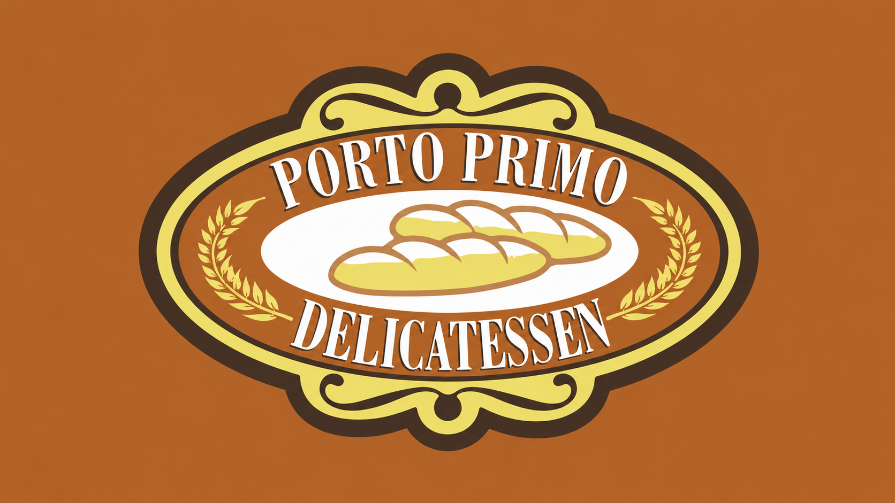
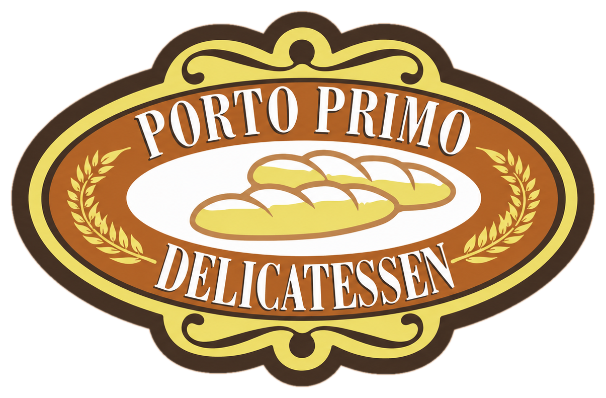

Buffet de cafe da manha
Selecao diaria com paes, bolos, frutas, frios e acompanhamentos.

Cardapio digital

Estacoes de padaria, itens regionais, frutas, frios e bebidas quentes para comecar o dia.
Selecao diaria com paes, bolos, frutas, frios e acompanhamentos.
Queijos, presuntos, peito de peru, manteiga, requeijao e geleias.
Cuscuz, macaxeira, inhame e ovos preparados para acompanhar.
Classico de fornada para montar com frios, manteiga ou queijo.
Porcao quente para acompanhar cafe ou chocolate.
Opcoes para combinacoes com geleias, queijos e pastas.
Servido com manteiga, queijo, ovos ou charque conforme disponibilidade.
Itens de cafe regional para acompanhar proteinas e frios.
Opcoes simples e recheadas para o cafe da manha.
Preparo classico para acompanhar paes e cuscuz.
Opcao intensa para montar prato de cafe regional.
Selecao de queijos, presunto e peito de peru.
Sabores rotativos para acompanhar cafe coado ou cappuccino.
Melancia, mamao, banana, melao e outras frutas da estacao.
Acompanhamentos para paes, torradas, queijos e bolos.
Servido no padrao da casa.
Classico matinal para acompanhar itens de padaria.
Sabores rotativos conforme disponibilidade.
Comida de buffet com proteinas, massas, guarnicoes, saladas e acompanhamentos de delicatessen.
Selecao diaria com pratos quentes, saladas, massas e acompanhamentos.
Receitas variam conforme producao e disponibilidade da cozinha.
Folhas, legumes, graos e molhos para montar o prato.
Opcao leve para combinacoes com arroz, salada e legumes.
Classico de buffet com molho, queijo e acompanhamento quente.
Proteina caseira para acompanhar arroz, feijao e guarnicoes.
Opcao rotativa para dias de buffet com frutos do mar ou pescados.
Massa curta com molho do dia.
Versoes rotativas conforme producao da cozinha.
Molhos classicos para massas do buffet.
Base tradicional do almoco.
Preparo caseiro para acompanhar pratos quentes.
Guarnicao cremosa para carnes, aves e peixes.
Selecao de legumes da casa.
Folhas frescas para montagem do prato.
Itens frios para saladas simples.
Opcoes de salada fria conforme disponibilidade.
Acompanhamento seco para pratos quentes.
Molhos rotativos para a mesa fria.
Guarnicao quente conforme producao do dia.
Opcoes quentes, lanches de delicatessen, sopas e preparos leves para o atendimento noturno.
Selecao noturna com receitas leves e acompanhamentos.
Massas rotativas para jantar pratico.
Preparos conforme producao da cozinha.
Opcao classica para o jantar.
Sopa leve com frango, arroz e legumes.
Preparos rotativos da cozinha.
Pao, queijo e presunto.
Opcao fria com recheios da casa.
Itens de vitrine para consumo rapido.
Folhas, legumes, graos e proteina do dia.
Montagens frias de delicatessen.
Acompanhamentos para saladas e sanduiches.
Sabores disponiveis na vitrine.
Sobremesa classica de delicatessen.
Fatias de bolo para acompanhar cafe.
Bebidas para cafe da manha, almoco, jantar e lanches de padaria.
Cafe curto de cafeteria.
Opcao cremosa para acompanhar doces e bolos.
Classico para padaria e cafe da manha.
Opcao classica e refrescante.
Sabores rotativos conforme disponibilidade.
Consulte sabores do dia.
Com ou sem gas.
Latas e garrafas conforme disponibilidade.
Opcoes prontas para consumo.
Preparada com leite.
Opcao leve para cafe ou lanche.
Combinacao conforme frutas disponiveis.
Estrada de Aldeia - KM 9,5
Buffet e padaria durante o funcionamento da casa.